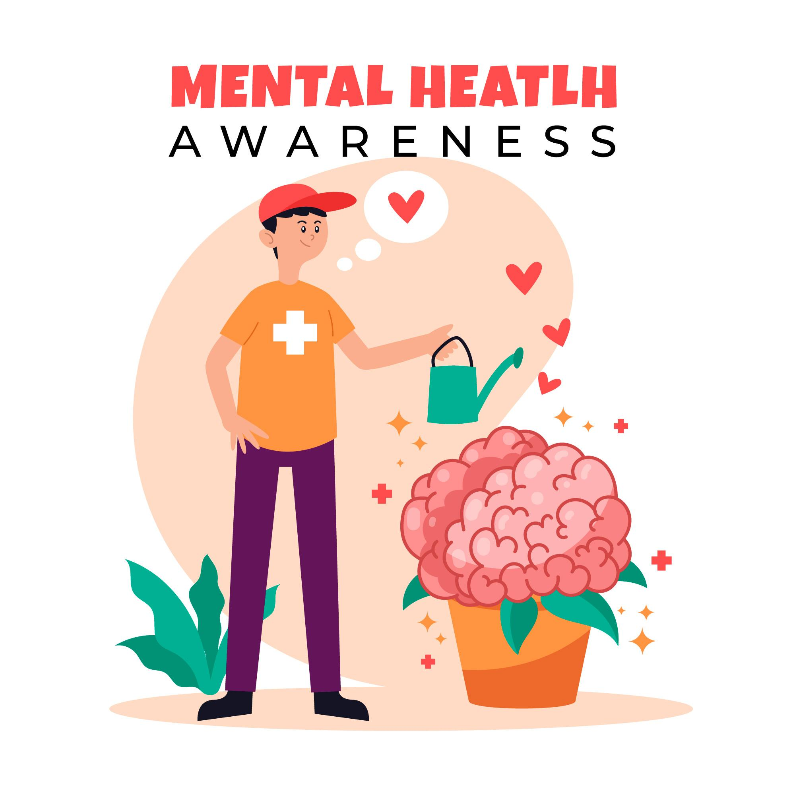

Mental Health Awareness
Introduction
Even though mental health is just as important as physical health, it is often overlooked. It affects our regular feelings, ideas, and actions. Raising awareness of mental health promotes candid communication, reduces stigma, and improves wellbeing.
What is Mental Health
Individual's emotional, psychological, and social well-being can refer to their mental health. It impacts how individuals handle stress, relate to others, and make decisions.
Key aspects of mental health
- Emotional balance.
- Ability to manage stress.
- Healthy relationships.
- Productivity in daily life.
Common mental health disorders
Many people experience these mental health challenges at some point of their life. So having an understanding about these situations is essential for seeking help.
Anxiety disorders
- Persistent worry, fear, and nervousness.
- Symptoms: Sweating, rapid heartbeat, panic attacks.
- Example: Generalized anxiety disorder (GAD), Panic disorder.
Depression
- Feeling of sadness, loss of interest, and low energy.
- Can affect sleep, appetite, and daily activities.
- Fact: Over 280 million people worldwide suffer from depression.
Post-traumatic stress disorder (PTSD)
- Develops after experiencing trauma.
- Symptoms: Flashbacks, nightmares, and severe anxiety.
Importance of mental health awareness
In the current world, we should always talk about mental health because awareness leads to action.
Benefits of raising awareness
- Reduces stigma: Helps people seek help without fear.
- Encourages support: Builds stronger communities.
- Prevents crisis: Early intervention saves lives.

How to improve mental health
Practicing self-care
- Get enough sleep (7-9 hours daily).
- Eat a balanced diet rich in nutrients.
- Engage in physical activity (at least 30 mins daily).
Social Connections
- Spend time with family and friends.
- Join support groups or talk to someone you trust.
Seeking Professional Help
- Therapists and counselors provide valuable guidance.
- Helplines & Mental Health Services can support people in crisis.